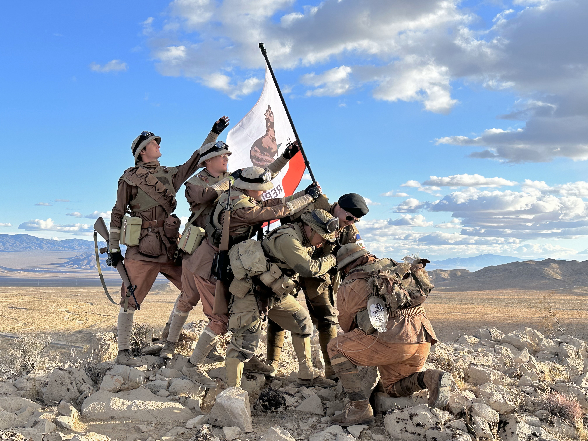

Nacida de las cenizas de la pequeña comunidad de Shady Sands, la República de Nueva California (RNC) es el intento más grande y ambicioso por restaurar la civilización, la democracia y el orden del viejo mundo en el Yermo. Con su icónica bandera del oso bicéfalo, la RNC ha logrado establecer una economía estructurada, un sistema legal funcional y el ejército regular más grande conocido. Sin embargo, su rápida expansión territorial los ha llevado a enfrentar problemas críticos de burocracia, corrupción política y líneas de suministro peligrosamente extendidas. Aunque sus ciudadanos disfrutan de una seguridad inusual en el post-apocalipsis, la RNC se encuentra en una lucha constante por mantener su integridad frente a amenazas externas y su propia ambición expansionista.
ESTE DEMO FUNCIONA COMO BASE EXPLICATIVA PARA COMPRENDER LA PUBLICACIÓN DE MODELOS DIGITALES EN WEB Y RA DESDE DISPOSITIVOS MÓVILES.